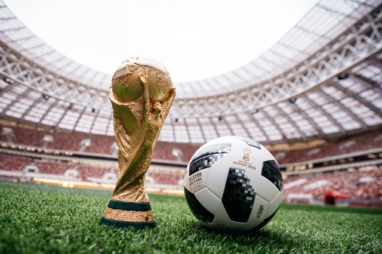
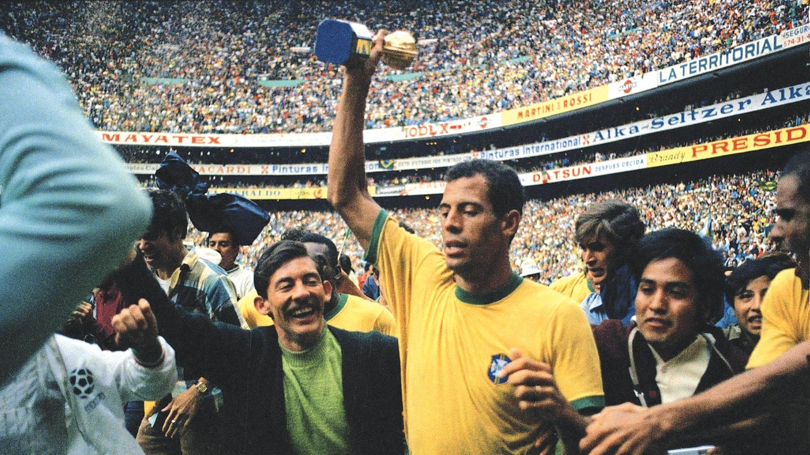

<ion-header no-border>
  <ion-navbar>
    
    <ion-title>
      <p>Menu</p>
    </ion-title>

  </ion-navbar>
</ion-header>

  <ion-content class="card-background-page">

      <ion-card (click)="PaginaFases()">
          
          <div class="card-title">Tabela de Classificação</div>
          <div class="card-subtitle">Fase de Grupos, Oitavas, Quartas, Semifinal, 3º Lugar e Final</div>
        </ion-card>

      <ion-card (click)="PaginaSelecoes()">
        
        <div class="card-title">Seleções</div>
        <div class="card-subtitle">Lista de seleções na Copa da Rússia 2018</div>
      </ion-card>
    
      <ion-card (click)="PaginaHistoria()">
        
        <div class="card-title">História das Copas anteriores</div>
      </ion-card>
    
      
    
    </ion-content>